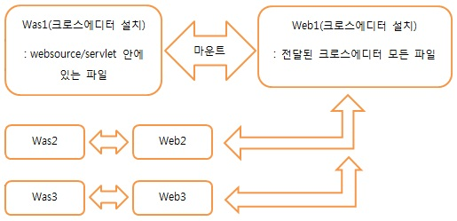

본 문서는 WAS를 사용하는 SERVLET 환경을 중심으로 설명하고 있습니다.
설치 방법를 참조하여 하나의 웹 서버, WAS에만 크로스에디터를 설치합니다.
- 웹 서버 : 크로스에디터 빌드 파일 전체를 복사합니다.
- WAS : "크로스에디터 빌드 폴더/websource/" 폴더를 복사합니다.
SERVLET의 경우 "크로스에디터 빌드 폴더/websource/servlet/" 하위의 폴더들을 "$WebApplication_Root/WEB-INF/"에 복사합니다.
웹 서버와 WAS가 분리되어 있는 경우 WAS에서 웹 서버를 접근할 수 있도록 mount 설정을 해 줍니다.
- 크로스에디터는 기본적으로 웹 서버에서 돌아가지만 관리자 페이지, 몇 가지의 플러그인 기능에서 서버사이드 기술을 사용하고 있습니다. 따라서 WAS에서 웹 서버의 파일에 접근을 하기 위해 반드시 mount가 필요합니다.
나머지 서버에서는 크로스에디터를 설치한 서버의 파일을 호출하여 크로스에디터를 사용합니다.
각각의 웹 서버와 WAS에 크로스에디터 빌드 파일을 복사합니다.
- 웹 서버 : 크로스에디터 빌드 파일 전체를 복사합니다.
- WAS : "크로스에디터 빌드 폴더/websource/" 폴더를 복사합니다.
SERVLET의 경우 "크로스에디터 빌드 폴더/websource/servlet/" 하위의 폴더들을 "$WebApplication_Root/WEB-INF/"에 복사합니다.
여러 대의 서버에 각각 크로스에디터를 설치하는 경우에는 관리자 페이지를 사용할 수 없습니다.
SERVLET의 경우에는 관리자 페이지에서 입력해야하는 설치 정보를 수동으로 입력하셔야 합니다.
"크로스에디터 설치 폴더/js/ext/namo_servletContextPath.js"
var contextPath = '/crosseditor/';
// 올바른 Context 경로 입력
"$WebApplication_Root/WEB-INF/classes/NamoCommand.properties"
crosseditorInstallPath=D\:\\workspace\\crosseditor\\
imageUrlPath=http\://test.namo.co.kr/crosseditor/IMAGE2
imageSavePath=D\:\\workspace\\crosseditor\\IMAGE2
크로스에디터 관리자의 기능은 "크로스에디터 설치 폴더/config/xmls/Config.xml"을 직접 수정하거나,
개발자용 API를 이용하여 크로스에디터 호출 페이지에서 직접 적용을 하시면 됩니다.
<script type="text/javascript">
var CrossEditor = new NamoSE("crosseditor");
CrossEditor.params.Width = "100%"
CrossEditor.params.LineHeight = "200";
CrossEditor.EditorStart();
</script>
별도의 이미지 서버를 사용하는 경우에 아래의 방법을 적용하시길 바랍니다.
JSP의 경우 기본적으로는 mount설정을 사용해서 이미지 서버의 경로를 잡아주셔야 합니다.
ASP, ASP.NET, 부득이하게 mount설정을 사용할 수 없는 JSP의 경우 다음의 순서대로 진행 합니다.
패치 파일을 크로스에디터 설치 폴더에 덮어쓰기 합니다.
이미지 서버에 아래의 웹 소스를 실행할 수 있도록 웹 서버(JSP의 경우 WAS까지)를 설치합니다.
아래의 파일들을 이미지 서버의 웹 소스가 실행될 수 있는 위치로 복사합니다.
- ASP : ImageUpload.asp, Util.asp, NamoProperty.asp
- ASP.NET : ImageUpload.aspx, ImageUpload.aspx.cs, NamoProperty.aspx
- JSP : ImageUpload.jsp, Util.jsp, NamoProperty.jsp
이미지 서버로 복사한 NamoProperty 파일을 열어 이미지 저장 물리적 경로와 URL 경로를 입력합니다.
해당파일에 주석으로 설명이 되어 있습니다.
크로스에디터를 호출하는 페이지에서 API를 이용하여 설정을 합니다.
- UploadFileExecutePath : ImageUpload 파일이 실행될 URL 경로를 FULL URL로 설정합니다.
- ImageSavePath : 해당 API의 기본 기능은 이미지 저장 경로를 설정하는 것이지만 해당 경우에는 무시가 되며, NamoPropery 파일에서 참조하여 동적 경로 설정을 할 때 필요한 설정으로 설정하지 않아도 무방합니다.
<script type="text/javascript">
var CrossEditor = new NamoSE("crosseditor");
CrossEditor.params.ImageSavePath = "IMAGE2";
CrossEditor.params.UploadFileExecutePath = "http://image.namo.co.kr/ImageTest/ImageUpload.aspx";
CrossEditor.EditorStart();
</script>
PHP는 해당 기능을 제공하지 않습니다.
이미지 서버를 mount를 통해 접근 가능하도록 설정해 줍니다.